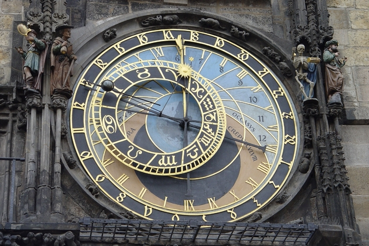

Покопавшись в википедии я так понял что определили это еще толи в 1928 толи в 1977, но сам факт. Понимаете, нас с вами обманули! Просто либо люди занимающиеся астрологией настолько тупые что никто не знает определения слова зодиак, толи всем наплевать что то чем они тогда занимаются бред, толи кому-то хотелось врать. Но факт остается фактом ничего не поменялось. Сказали что ребят а вы знаете даты то другие. А им класть они гонят свое и гонят. И книги меня убивают, смотришь в книжном так астрология - нука в даты влезем - опять ту же фигню впаривают - старые даты. Которым к слову больше 2 тысяч лет. Чему удивляться после этого что гороскоп нам не подходит что описывает вовсе не нас. Получается астрономы большие астрологи после этого. Про Павла Глобу вообще молчу человек явно некомпетентен. Забавно живем почти век все все знают но как-будто ничего нет, никто ничего не видит не замечает, а зачем что-то менять думать и делать? Зачем напрягаться то. Вот так вот мы с вами и живем. Следующий пост наверно будет про науку, где тоже не все так гладко и честно как нам говорят. Про астрологию возможно что-то дополню и исправлю ... Про 13 созвездие кстати нарыл характеристику, прочитав нашел что-то похожее в тех людях кого знаю, так что копирайт сделаю точно))
Ну сейчас многие мне скажут - блин ну ты ж чувак с техническим образованием. Ты же должен понимать что это фигня. Но вот что я скажу. Я не спорю что все люди разные и нельзя погалаться на прогнозы, описания человека по гороскопу и т.д. Во-первых бывают ошибки
Во-вторых прогноз - это всего лишь один из возможных вариантов развития событий, а если учесть что астрология это не наука а что-то такое философско-предсказателькое ... не подберу слова да и черт с ним, то возникает законный вопрос а кто астролог а кто аферист и шарлатан? Как проверить. Знаете иногда смотря по утрам ТВ и слушая астропрогноз просто ржешь - одно и то же другими словами для всех знаков и на следующий день то же самое. Думаешь - я тоже могу придумать че-нить там и свой прогноз дать... Да это есть и ярко выражено
Однако все же есть настоящие нормальные астрологи. И астрология может охарактеризовать человека, но понимаете мы не умеем ей пользоваться, не умеем работать с ней. Для обычного обывателя это как - так Вася Иванов родился 14 февраля... так он у нас Водолей. Так какое у нас описание водолея, ага. Все он считает этого достаточно. Но там все сложнее смотреть надо не день рождения, а кроме того время и положение всех объектов неба - планет, луны в каких они были знаках зодиака. И по всем нужна трактовка. Каждый вносит свой вклад. Еще очень забавно что зодиакальное созвездие соответствующее Васе Иванову нихрена не водолей а Козерог. Как так спросите вы? Ведь в книжке зодиак и астрология точно написано, какому знаку какие дни соответствуют. А вот теперь дамы и господа познакомьтесь с одним большим обманом (или наеб...вом) это уже как вам самим больше нравится Ведь зодиакальное созвездие - это такое созвездие в котором находится Солнце в момент рождения. Так вот
- Овен 21 марта — 20 апреля
- Телец 21 апреля — 21 мая
- Близнецы 22 мая — 21 июня
- Рак 22 июня — 22 июля
- Лев 23 июля — 22 августа
- Дева 23 августа — 23 сентября
- Весы 24 сентября — 23 октября
- Скорпион 24 октября — 22 ноября
- Стрелец 23 ноября — 21 декабря
- Козерог 22 декабря — 20 января
- Водолей 21 января — 19 февраля
- Рыбы 20 февраля — 20 марта

Так вот эти даты они неверные. Астрономы определили когда и через какие созвездия проходит Солнце. И вот что они получили –- Овен: 19 апреля — 13 мая
- Телец: 14 мая — 19 июня
- Близнецы: 20 июня — 20 июля
- Рак: 21 июля — 9 августа
- Лев: 10 августа — 15 сентября
- Дева: 16 сентября — 30 октября
- Весы: 31 октября — 22 ноября
- Скорпион: 23 — 29 ноября
- Змееносец: 30 ноября — 17 декабря
- Стрелец: 18 декабря — 18 января
- Козерог: 19 января — 15 февраля
- Водолей: 16 февраля — 11 марта
- Рыбы: 12 марта — 18 апреля
С помощью новых дат можно заново сопоставить свой день рождения со своим знаком и посмотреть гороскоп
| Созвездие | Даты |
|---|---|
| Овен | 19 апреля — 13 мая |
| Телец | 14 мая — 19 июня |
| Близнецы | 20 июня — 20 июля |
| Рак | 21 июля — 9 августа |
| Лев | 10 августа — 15 сентября |
| Дева | 16 сентября — 30 октября |
| Весы | 31 октября — 22 ноября |
| Скорпион | 23 — 29 ноября |
| Змееносец | 30 ноября — 17 декабря |
| Стрелец | 18 декабря — 18 января |
| Козерог | 19 января — 15 февраля |
| Водолей | 16 февраля — 11 марта |
| Рыбы | 12 марта — 18 апреля |